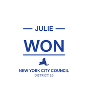
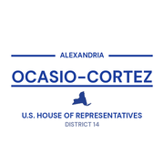

The district
Community boards City Council
City Council State Senate
State Senate Congress
Congress Subway
Subway Citi Bike
Citi Bike NYC Ferry
NYC Ferry
City CouncilState SenateCongressSubwayCiti BikeNYC FerryTurn layers on and off. Tap an official's logo or a board's seal for its page. Zoning and land use lot by lot are on the land use map.
About
Assembly Member Diana C. Moreno represents State Assembly District 36. It sits in Queens.
The district overlaps community boards Queens 1 and Queens 2.
It is policed by the 108th and 114th Precincts.
It overlaps council districts 22 and 26 and Senate districts 12 and 59.
Members of the State Assembly serve two year terms.
Next on the ballot in November 2026. Find your poll site and sample ballot there, or see what is coming up on the calendar.
Assembly District 36 in numbers
121,852
residents
ACS 2019–2023
35.7
median age
ACS 2019–2023
$94,667
median household income
ACS 2019–2023
$2,160
median rent a month, what renters pay
ACS 2019–2023
7.4%
unemployment
ACS 2019–2023
13.5%
living below the poverty line
ACS 2019–2023
84.3%
of homes are rented
ACS 2019–2023
43.3%
of renters pay 30% or more of income in rent
ACS 2019–2023
$770,800
median value of an owned home
ACS 2019–2023
74,428
homes
ACS 2019–2023
U.S. Census Bureau, American Community Survey 2019-2023 5-year estimates.
Bills
2026-03-23A10340 print number 10340a
Relates to increasing tax rates imposed on unincorporated businesses and corporations in New York city
2026-05-08A11288 In committee: Election law
Warns voters about New York's closed primary system on voter registration forms
2026-05-08A11289 In committee: Corporations, authorities and commissions
Establishes the "Not on our dime!: Ending New York funding of Israeli settler violence act" to prohibit not-for-profit corporations from engaging in unauthorized support of Israeli settlement activity
2026-06-02A11371 Replaced by the Senate version
Extends the effectiveness of certain provisions relating to the establishment of certain water charges for hospitals and charities in New York city
2026-05-15A11415 In committee: Higher education
Provides that certain institutions of higher education shall meet certain standards that do not infringe upon academic freedom
2026-05-15A11416 In committee: Election law
Provides for the notification of individuals when their address confidentiality time period is expiring
Committees
Committee on AgingCommittee on AgricultureCommittee on Real Property TaxationCommittee on Small BusinessCommittee on Social ServicesBlack, Puerto Rican, Hispanic & Asian Legislative CaucusLegislative Women's CaucusPuerto Rican/Hispanic Task Force
Contact
Overlap
Community boards


Bars show how many of the district's election districts fall in each board.
Overlapping elected officials
Council Member Tiffany CabánCouncil District 22 · 49 election districts
›
Council Member Julie WonCouncil District 26 · 18 election districts
›
State Senator Kristen GonzalezSenate District 59 · 57 election districts
›
State Senator Michael GianarisSenate District 12 · 8 election districts
›
State Senator Toby Ann StaviskySenate District 11 · 2 election districts
›
New York’s 14th Congressional DistrictNY-14 · 40 election districts
›
New York’s 7th Congressional DistrictNY-7 · 28 election districts
›| Queens CB 1 | 89% of the assembly district | 46% of it |
| Queens CB 2 | 11% of the assembly district | 7% of it |
| 114 Precinct | 88% of the assembly district | 44% of it |
| 108 Precinct | 11% of the assembly district | 7% of it |
| Sector 114C | 42% of the assembly district | 100% of it |
| Sector 114D | 27% of the assembly district | 79% of it |
| Sector 114B | 14% of the assembly district | 16% of it |
| Sector 108A | 11% of the assembly district | 44% of it |
| Sector 114A | 6% of the assembly district | 16% of it |
| School District 30 | 100% of the assembly district | 28% of it |
| Council District 22 | 62% of the assembly district | 37% of it |
| Council District 26 | 37% of the assembly district | 20% of it |
| Senate District 59 | 86% of the assembly district | 46% of it |
| Senate District 12 | 10% of the assembly district | 3% of it |
| Senate District 11 | 4% of the assembly district | 1% of it |